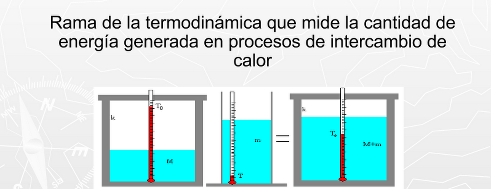

Calorimetría
La calorimetría es la parte de la física que se encarga de la medición del calor en una reacción química o un cambio de estado usando un instrumento llamado calorímetro. Pero también se puede emplear un modo indirecto calculando el calor que los organismos vivos producen a partir de la producción de dióxido de carbono y de nitrógeno (urea en organismos terrestres), y del consumo de oxígeno.

Calor
Es la Energía Térmica que se transfiere de un objeto a otro cuando entran en contacto mutuo, debido a una diferencia de temperaturas entre ellos.
La dirección de la transferencia de la Energía Térmica es siempre desde la sustancia de mayor temperatura hacia la de menor temperatura (o sea desde la más caliente a la más fría).
Cuando fluye calor entre dos objetos o sustancias que se encuentran unidas; se dice que están en CONTACTO TÉRMICO.
Equilibrio térmico
El equilibrio térmico es aquel estado en el cual se igualan las temperaturas de dos cuerpos, las cuales, en sus condiciones iniciales presentaban diferentes temperaturas, una vez que las temperaturas se equiparan se suspende el flujo de calor, llegando ambos cuerpos al mencionado equilibrio térmico.
El de equilibrio térmico es un concepto que forma parte de la termodinámica, la rama de la física que se ocupa de describir los estados de equilibrio a un nivel macroscópico.
Temperatura
La temperatura es una magnitud referida a las nociones comunes de calor medible mediante un termómetro. En física, se define como una magnitud escalar relacionada con la energía interna de un sistema termodinámico, definida por el principio cero de la termodinámica. Más específicamente, está relacionada directamente con la parte de la energía interna conocida como «energía cinética», que es la energía asociada a los movimientos de las partículas del sistema, sea en un sentido traslacional, rotacional, o en forma de vibraciones. A medida que sea mayor la energía cinética de un sistema, se observa que este se encuentra más «caliente»; es decir, que su temperatura es mayor.

La temperatura de un gas ideal monoatómico es una medida relacionada con la energía cinética promedio de sus moléculas al moverse. En esta animación, se muestra a escala la relación entre el tamaño de los átomos de helio respecto a su espaciado bajo una presión de 1950 atmósferas.